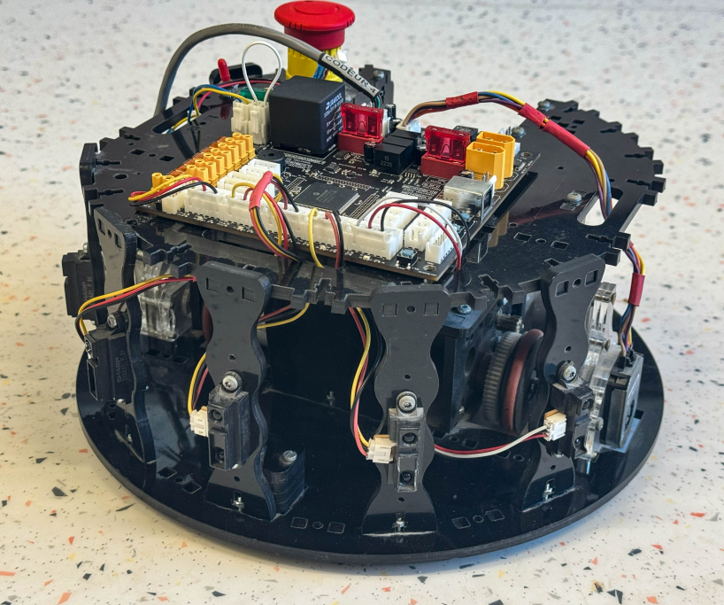
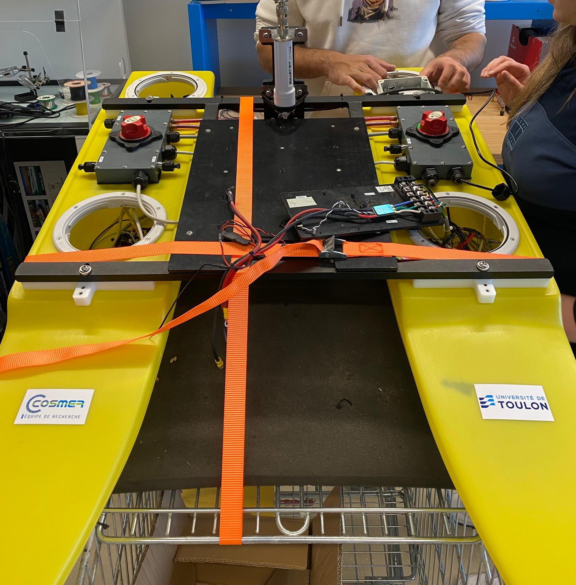

These are projects I have worked on throughout my academic journey, internships, and extracurricular engagements.
Autonomous TurtleBot Navigation with ROS
Developed an autonomous navigation system for a TurtleBot2 robot using ROS. The robot navigates the environment by detecting and avoiding obstacles using bumpers and LIDAR.
Skills: Python , ROS1, Sensor Integration (Bumpers, LIDAR), Gazebo Simulation, Autonomous Navigation and Obstacle Avoidance
Learn More
Robotic Assistance for Prostate Biopsy
Developed kinematic models, manipulability analysis, and motion compensation strategies
for KUKA LBR robots in a medical context.
Designed a prostate phantom support, simulated patient motion, and implemented a
ROS2 force-based PI controller for real-time adaptive tracking.
Skills: Python, ROS2, C++, SolidWorks, Genetic Algorithms, Kinematic Analysis
Learn More

Autonomous Mobile Robot
A robot programmed in C with MPLAB to perform autonomous navigation and obstacle avoidance using infrared sensors and a dsPIC microcontroller.
Skills: Embedded C, MPLAB, dsPIC33EP, PWM, ADC, Sensors, State Machine
Learn More
ROS-Based Simulation and Kinematic Analysis of MH5F Robotic Arm
Contributed to the developement of a digital twin for a Computer Integrated Manufacturing (CIM) platform using ROS, focusing on the kinematic simulation of a robotic arm for object manipulation.
Skills: ROS1, Python, RVIZ, Moveit, Solidworks, Kinematic Analysis
Learn More

Enhancement of Cable Winding System for Marine Robotics
Improved the cable winding system for an Unmanned Surface Vehicle (USV) connected to a Remotely Operated Vehicle (ROV).
Skills: Solidworks, Mechanical Design and Prototyping, 3D Printing and Metal Fabrication, Problem-Solving and Iterative Testing
Learn More
YOLOv8 for JeVois Pro Camera in RoboCup
This project involved integrating the YOLOv8 object detection model into the JeVois Pro camera system to enhance the visual perception capabilities of robots for the RoboCup competition.
Skills: Python, YOLOv8, DeepLabel, GitHub, Image Processing, Object Detection, Model Training and Deployment, Hailo Model Conversion
Learn More
Image analysis using OpenCV
This project involved developing algorithms for object detection and counting in industrial images and analyzing multispectral drone imagery for agricultural monitoring.
Skills: Python, OpenCV, NumPy, Matplotlib, Image Processing, Computer Vision, Spectral Analysis, NDVI Calculation, Data Visualization
Learn More

Noise-Activated LED Circuit with Microphone
This project involved analyzing, designing, and assembling the circuit on a real board.
The system uses a microphone to detect sound, triggering a LED as visual feedback.
Skills: Eagle CAD, PCB Design, Circuit Analysis, Soldering.
Learn More
SWARMz4 – Drone & Ship Battle Simulation
Developed in collaboration with two colleagues, this project built a drone and ship combat simulation in
ROS2 + Gazebo. We implemented communication, detection, and attack systems, while also
designing a Qt-based interface for better monitoring of strategies and tests.
Skills: ROS2, Gazebo, PX4, QGroundControl, Python, C++, Qt Design
Learn More